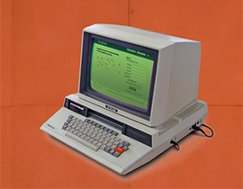
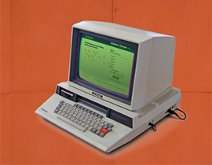

THINGS AREN'T ALWAYS
#000000
OR
#FFFFFF
view all videos
 



view all news
approach that suggests that design and development should respond to the user's behavior and environment based on screen size, platform and orientation.
approach that suggests that design and development should respond to the user's behavior and environment based on screen size, platform and orientation.
view all featured media